신재생에너지발전설비기사 (2021-05-15 기출문제)
1과목: 태양광발전 기획
1. 신에너지 및 재생에너지 개발ㆍ이용ㆍ보급 촉진법령에 따라 국가 또는 지방자치단체가 신ㆍ재생에너지 기술개발 및 이용ㆍ보급에 관한 사업을 하는 자에게 국유재산 또는 공유재산을 임대하는 경우에는 「국유재산법」 또는 「공유재산 및 물품관리법」에도 불구하고 임대료를 얼마의 범위에서 경감할 수 있는가?
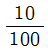
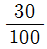
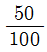
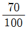
(정답률: 73%)

2. 위도 36.5°에서 하지 시 남중고도는?
- 30°
- 45°
- 70°
- 77°
(정답률: 79%)
3. 태양광발전 모듈의 온도에 대한 일반적인 특성이 아닌 것은?
- 계절에 따른 온도변화로 출력이 변동한다.
- 태양광발전 모듈은 정(+)의 온도 특성이 있다.
- 태양광발전 모듈 온도가 상승할 경우 개방전압과 최대출력은 저하한다.
- 태양광발전 모듈의 표면온도는 외기온도에 비례해서 맑은 날에는 20 ~ 40℃ 정도 높다.
(정답률: 78%)
4. 신에너지 및 재생에너지 개발ㆍ이용ㆍ보급 촉진법령에 따라 신ㆍ재생에너지 설비를 설치한 시공자는 해당 설비에 대하여 성실하게 무상으로 하자보수를 실시하여야 하며 그 이행을 보증하는 증서를 신ㆍ재생에너지 설비의 소유자 또는 산업통상자원부령으로 정하는 자에게 제공하여야 한다. 이때 하자보수의 기간은 몇 년의 범위에서 산업통상자원부장관이 정하여 고시하는가?
- 3
- 5
- 7
- 10
(정답률: 47%)
5. 축전지의 용량환산시간(K)을 구하기 위해 필요한 값이 아닌 것은?
- 방전시간
- 축전지 온도
- 축전지 보수율
- 허용 최저전압
(정답률: 54%)
6. 태양광발전시스템을 뇌서지의 피해로부터 보호하기 위한 대책으로 적절하지 않은 것은?
- 뇌우 다발지역에서는 교류전원측에 내뢰트랜스를 설치한다.
- 접지선에서의 침입을 막기 위해 전원측의 전압을 항상 낮게 유지한다.
- 피뢰소자를 어레이 주회로 내부에 분산시켜 설치하고 접속함에도 설치한다.
- 저압 배전선으로 침입하는 뇌서지에 대해서는 분전반에 피뢰소자를 설치한다.
(정답률: 75%)
7. 전기사업법령에 따라 전기사헙 등의 공정한 경쟁 환경조성 및 전기사용자의 권익 보호에 관한 사항의 심의와 전기사업 등과 관련된 분쟁의 재정(裁定)을 위하여 산업통상자원부에 무엇을 두는가?
- 전기위원회
- 녹색성장위원회
- 한국전기기술기준위원회
- 신ㆍ재생에너지정책심의회
(정답률: 71%)
8. 태양전지의 P-N접합에 의한 태양광발전 원리로 옳은 것은?
- 광 흡수→전하분리→전하생성→전하수집
- 광 흡수→전하생성→전하분리→전하수집
- 광 흡수→전하생성→전하수집→전하분리
- 광 흡수→전하분리→전하수집→전하생성
(정답률: 75%)
9. 전기사업법령에 따라 사업계획에 포함되어야 할 사항 중 전기설비 개요에 포함되어야 할 사항에 해당하지 않는 것은? (단, 전기설비가 태양광설비인 경우)
- 인버터의 종류
- 집광판의 면적
- 태양전지의 종류
- 이차전지의 종류
(정답률: 77%)
10. 전기사업법령에 따른 전기사업의 허가기준으로 틀린 것은?
- 전기사업이 계획대로 수행될 수 있을 것
- 전기사업을 적정하게 수행하는 데 필요한 재무능력이 있을 것
- 발전소나 발전연료가 특정 지역의 편중되어 전력계통의 운영에 지장을 주지 아니할 것
- 배전사업의 경우 둘 이상의 배전사업자의 사업구역 중 그 전부 또는 일부가 중복되게 할 것
(정답률: 75%)
11. 전기사업버령에 따른 전기사업용 전기설비 공사계획의 인가 및 신고의 대상에서 발전소의 설치공사 시 인가가 필요한 발전소의 출력은 얼마 이상인가?
- 10000kW
- 30000kW
- 50000kW
- 100000kW
(정답률: 56%)
12. 전기송사법령에 따라 대통령령으로 정하는 경미한 전기공사가 아닌 것은?
- 퓨즈를 부착하거나 떼어내는 공사
- 전력량계를 부착하거나 떼어내는 공사
- 꽂음접속기의 보수 및 교환에 관한 공사
- 벨에 사용되는 소형변압기(2차측 전압 60볼트 이하의 것으로 한정한다)의 설치 공사
(정답률: 68%)
13. 태양광발전시스템의 부지 사전조사 내용으로 틀린 것은?
- 연평균 일사량
- 사업부지의 위치
- 연평균 CO2 발생량
- 주변건물 또는 수목에 의한 음영 발생 가능성 여부
(정답률: 85%)
14. 신ㆍ재생에너지 설비의 지원 등에 관한 규정에 따라 주택지원사업은 신ㆍ재생에너지 설비를 주택에 설치하려는 경우 설치비의 일부를 국가가 보조금으로 지원해 주는 사업을 말한다. 그 범위 및 대상으로 틀린 것은?
- 기숙사
- 아파트
- 단독주택
- 공공주택
(정답률: 74%)
15. 신에너지 및 재생에너지 개발ㆍ이용ㆍ보급 촉진법령에 따라 집적화단지 조성사업의 실시기관으로 선정되려는 지방자치단체의 장이 산업통상자원부장관에게 제출해야 하는 집적화단지 개발계획에 포함되는 사항으로 틀린 것은?
- 집적화단지의 위치 및 면적
- 집적화단지 조성사업의 개요 및 시행방법
- 집적화단지 조성 및 기반시설 설치에 필요한 부지 판매 계획
- 집적화단지 조성사업에 대한 주민수용성 및 친환경성 확보 계획
(정답률: 83%)
16. 국토의 계획 및 이용에 관한 법령에 따라 도시ㆍ군관리계획 시 개발행위허가기준에 대한 설명으로 옳은 것은?
- 주변의 교통소통에 지장을 초래하지 아니할 것
- 대지와 도로의 관계는 「건축법」에 적합할 것
- 공유수면매립의 경우 매립목적이 도시ㆍ군계획에 적합할 것
- 용도지역별 개발행위의 규모 및 건축제한 기준에 적합할 것
(정답률: 57%)
17. 전기공사업법령에 따라 공사업자는 공사업을 폐업할 경우에는 누구에게 그 사실을 신고하여야 하는가?
- 대통령
- 시ㆍ도지사
- 산업통상자원부 장관
- 한국전기공사협회 회장
(정답률: 77%)
18. 인버터의 기능 중 계통보호를 위한 기능으로만 묶인 것은?
- 단독운전 방지기능, 자동전압 조정기능
- 단독운전 방지기능, 자동운전ㆍ정지기능
- 최대전력 추종제어기능, 자동운전ㆍ정지기능
- 최대전력 추종제어기능, 자동전압 조정기능
(정답률: 60%)
19. 태양광발전시스템 이용률이 15.5%일 때 일평균 발전시간(h/day)은 약 몇 시간인가?
- 3.40
- 3.52
- 3.64
- 3.72
(정답률: 67%)
20. 면적이 250cm2이고 변환효율이 20%인 결정질 실리콘 태양전지의 표준조건에서의 출력(W)은?
- 0.4
- 0.5
- 4
- 5
(정답률: 53%)
2과목: 태양광발전 설계
21. 어떤 태양광발전 모듈의 최대전력은 100W이고, STC 조건에서 측정한 값이다. 태양광발전 모듈의 표면온도가 45℃일 때 태양광발전 모듈의 최대출력(W)은? (단, 태양광발전 모듈의 온도 보정계수(a)는 –0.5%/℃이다.)
- 90
- 95
- 100
- 110
(정답률: 59%)
22. 공사시방서에 대한 설명으로 틀린 것은?
- 주요 기자재에 대한 규격, 수량 및 납기일을 기재한다.
- 공사에 필요한 시공방법, 시공품질, 허용오차 등 기술적 사항을 규정한다.
- 계약문서에 포함되는 설계도서의 하나로, 계약적 구속력을 가지며, 공사의 질적 요구조건을 규정하는 문서이다.
- 공사감독자 및 수급인에게는 시공을 위한 사전준비, 시공 중의 점검, 시공완료 후의 점검을 위한 지침서로 사용할 수 있다.
(정답률: 67%)
23. 전력시설물 공사감리업무 수행지침에 따라 감리원이 착공신고서의 적정여부를 검토하기 위해 참고하는 사항으로 틀린 것은?
- 안전관리계획: 전기공사업법에 따른 해당 규정 반영 여부 확인
- 공사 시작 전 사진: 전경이 잘 나타나도록 촬영되었는지 확인
- 작업인원 및 장비투입 계획: 공사의 규모 및 성격, 특성에 맞는 장비형식이나 수량의 적정 여부 확인
- 품질관리계획: 공사 예정공정표에 따라 공사용 자재의 투입시기와 시험방법, 빈도 등이 적정하게 반영되었는지 확인
(정답률: 44%)
24. 낙석ㆍ토석 대책시설(KDS 11 70 20 : 2020)에 따라 낙석방지응벽의 설계 시 고려사항으로 틀린 것은?
- 낙석의 증량
- 지지지반의 강도
- 지지지반의 지형
- 낙석의 최소도약높이
(정답률: 69%)
25. 분산형전원 배전계통 연계 기술기준에 따라 저압계통의 경우, 계통 병입 시 돌입전류를 필요로 하는 발전원에 대해서 계통 병입에 의한 순시전압변동률이 몇 %를 초과하지 않아야 하는가?
- 3
- 5
- 6
- 10
(정답률: 37%)
26. 한국전기설비규정에 따라 사용전압이 400V 초과인 저압 가공전선으로 경동선을 사용하는 경우 안전율이 얼마 이상이 되는 이도(弛度)로 시설하여야 하는가?
- 1.3
- 1.5
- 2.2
- 2.5
(정답률: 60%)
27. 한국전기설비규정에 따라 고압 가공전선이 다른 고압 가공 전선과 접근되거나 교차하여 시설되는 경우 고압 가공전선 상호 간의 이격거리는 몇 cm이상이어야 하는가? (단, 어느 한쪽의 전선이 케이블이 아닌 경우이다.)
- 80
- 100
- 150
- 300
(정답률: 60%)
28. 전력기술관리법령에 따라 대통령으로 정하는 요건에 해당하는 전력시설물 중 설계감리를 받아야 하는 발전설비의 최소 용량은?
- 60만킬로와트
- 70만킬로와트
- 80만킬로와트
- 90만킬로와트
(정답률: 60%)
29. 전력시설물 공사감리업무 수행지침에 따른 용어의 정의에서 감리업체에 근무하면서 상주감리원의 업무를 기술적ㆍ행정적으로 지원하는 사람을 무엇이라고 하는가?
- 책임감리원
- 보조감리원
- 비상주감리원
- 지원업무 담당자
(정답률: 68%)
30. 한국전기설비규정에 따라 모듈을 병렬로 접속하는 전로에는 그 전로에 단락전류가 발생할 경우에 전로를 보호하는 무엇을 설치하여야 하는가? (단, 그 전로가 단락전류에 견딜 수 없는 경우이다.)
- 개폐기
- 단로기
- 전류검출기
- 과전류차단기
(정답률: 74%)
31. 설계감리업무 수행지침에 따라 설계도서에 포함되어야 할 서류로 적합하지 않은 것은?
- 설계도면
- 설계내역서
- 설계설명서
- 신재생에너지 설비확인서
(정답률: 75%)
32. 신재생발전기 계통연계기준에 따라 태양광 발전기 인버터는 계통운영자의 지시에 따라 유효전력 출력 증감율 속도를 정격의 몇 %이내/분까지 제한하는 것이 가능한 제어 성능을 구비해야 하는가?
- 1
- 3
- 5
- 10
(정답률: 41%)
33. 전기설비 관련 시설공간(KDS 31 10 21 : 2019)에 따라 수변전실의 위치 결정 시 전기적 고려사항에 해당하지 않는 것은?
- 수전 및 배전 거리를 짧게 하여 경제성을 고려한다.
- 용량의 증설에 대비한 면적을 확보할 수 있는 장소로 한다.
- 사용부하의 중심에서 멀고, 간선의 배선이 용이한 곳으로 한다.
- 외부로부터 전원을 공급받기 위한 전선로 등의 인입이 편리한 위치로 한다.
(정답률: 74%)
34. 토목도면의 재료별 단면을 표시할 경우 지반에 해당하는 것은?
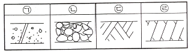
- ㉠
- ㉡
- ㉢
- ㉣
(정답률: 69%)
35. 지상설치의 기초 형식에 대한 종류와 그림 설명으로 틀린 것은?
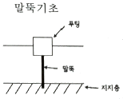
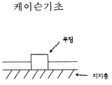
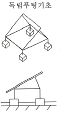
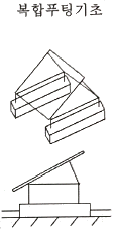
(정답률: 68%)
36. 전력시설물 공사감리업무 수행지침에 따라 감리원이 감리현장에서 감리업무 수행 상 필요에 의해 비치하고 기록ㆍ보관하는 서식으로 틀린 것은?
- 민원처리부
- 문서발송대장
- 감리업무일지
- 안전관리비 사용실적 현황
(정답률: 67%)
37. 태양광발전 모듈 설치 시 태양을 향한 방향에 높이 3m인 장애물이 있을 경우 장애물로부터 최소 이격거리(m)는? (단, 발전가능 한계시각에서의 태양의 고도각은 20°이다.)
- 약 8.2
- 약 10.5
- 약 15.6
- 약 18.7
(정답률: 52%)
38. 건축구조기준 설계하중(KDS 41 10 15 : 2019)에 따른 최소 지상적설하중은 몇 kN/m2로 하는가?
- 0.25
- 0.5
- 1.0
- 3.0
(정답률: 55%)
39. 케이블트레이공사 시 케이블을 지지하기 위하여 사용하는 금속재 또는 불연성 재료로 제작된 유닛 또는 유닛의 집합체 및 그에 부속하는 부속재 등으로 구성된 견고한 구조물 중 일체식 또는 분리식으로 모든 면에서 통풍구가 있는 그물형의 조립 금속구조는?
- 펀칭형
- 메쉬형
- 사다리형
- 바닥밀폐형
(정답률: 75%)
40. 전력기술관리법령에 따라 감리업자 등은 그가 시행한 공사감리 용역이 끝났을 때에는 공사감리 완료보고서를 며칠 이내에 시ㆍ도지사에게 제출하여야 하는가?
- 7일
- 10일
- 20일
- 30일
(정답률: 57%)
3과목: 태양광발전 시공
41. 수변전설비공사(KCS 31 60 10 : 2019)에 따른 전력퓨즈에 대한 설명으로 틀린 것은?
- 차단용량을 표시하는 경우 교류분의 대칭 실효값을 나타내어야 한다.
- 퓨즈가 차단할 수 있는 단락전류의 최대 전류 값으로 표시하여야 한다.
- 정격전압은 3상 회로에서 사용가능한 전압한도를 표시하는 것으로 퓨즈의 정격전압은 계통 최대 상전압으로 선정한다.
- 정격전류는 저녁퓨즈가 온도상승 한도를 넘지 않고 연속으로 흘러 보낼 수 있는 전류 값이며 실효값으로 표시하여야 한다.
(정답률: 54%)
42. 태양광발전시스템 구조물의 설치공사 순서를 보기에서 찾아 옳게 나열한 것은?
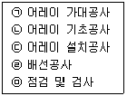
- ㉡→㉠→㉢→㉣→㉤
- ㉠→㉡→㉢→㉣→㉤
- ㉣→㉡→㉠→㉢→㉤
- ㉣→㉠→㉡→㉢→㉤
(정답률: 76%)
43. 전기사업법령에 따라 사용전검사를 받으려는 자는 사용전검사 신청서에 필요 서류를 첨부하여 검사를 받으려는 날의 며칠 전까지 한국전기안전공사에 제출하여야 하는가?
- 7
- 14
- 30
- 60
(정답률: 67%)
44. 태양광발전 모듈 설치 및 조립 시 주의사항으로 틀린 것은? (문제 오류로 가답안 발표시 3번으로 발표되었지만 확정 답안 발표시 3, 4번이 정답처리 되었습니다. 여기서는 가답안인 3번을 누르면 정답 처리 됩니다.)
- 태양광발전 모듈의 파손방지를 위해 충격이 가지 않도록 한다.
- 태양광발전 모듈과 가대의 접합 시 부식방지용 가스켓을 적용한다.
- 태양광발전 모듈을 가대의 상단에서 하단으로 순차적으로 조립한다.
- 태양광발전 모듈의 필요 정격전압이 되도록 1스트링의 직렬매수를 선정한다.
(정답률: 80%)
45. 태양광발전 모듈 단락전류 9A, 스트링 4병렬일 때, 직류(DC)차단기의 정격전류 범위로 옳은 것은?
- 43.2A ＜ 직류(DC) 차단기 정격전류 ≤ 86.4A
- 45A ＜ 직류(DC) 차단기 정격전류 ≤ 86.4A
- 43.2A ＜ 직류(DC) 차단기 정격전류 ≤ 90A
- 45A ＜ 직류(DC) 차단기 정격전류 ≤ 90A
(정답률: 53%)
46. 송전전력이 400MW, 송전거리가 200km인 경우의 경제적인 송전전압은 약 몇 kV인가? (단, Still식에 의하여 산정할 것)
- 313
- 333
- 353
- 363
(정답률: 52%)
47. 저압전기설비-제5-54부:전기기기의 선정 및 설치-접지설비 및 보호도체(KS C IEC 60364-5-54:2014)에 따른 보조본딩을 위한 보호본딩도체에 대한 설명이다. 다음 ( )에 들어갈 내용으로 옳은 것은?
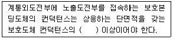
- 1/2
- 1/5
- 1/10
- 1/20
(정답률: 56%)
48. 교류의 파형률을 나타내는 관계식으로 옳은 것은?
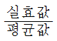
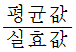
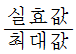
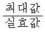
(정답률: 72%)
49. 태양광발전 모듈에서 인버터에 이르는 배선에 대한 설명으로 틀린 것은?
- 태양광발전 모듈의 출력배선은 극성별로 확인할 수 있도록 표시한다.
- 태양광발전 모듈에서 인버터에 이르는 배선에 사용되는 케이블은 피뢰도체와 교차 시공한다.
- 태양광발전 모듈 간의 배선은 2.5mm2이상의 연동선 또는 이와 동등 이상의 세기 및 굵기의것을 사용한다.
- 태양광발전 어레이의 출력배선을 중량물의 압력을 받는 장소에 지중으로 직접 매설식에 의해 시설하는 경우 1m이상의 매설깊이로 한다.
(정답률: 55%)
50. 전압-전류의 특성이 비직선적인 저항 소자로, 전압의 변화에 따라 전기저항 값이 크게 변화하는 소자는?
- 배리스터(Varistor)
- 서미스터(Thermistor)
- 압전소자(Piezo element)
- 열전소자(Thermoelement)
(정답률: 61%)
51. 수소원자에서 기저상태(주양자수 n=1)에 있는 전자를 n=2인 궤도로 옮기는 데 필요한 에너지(eV)는?
- 3.39
- 6.81
- 10.19
- 13.58
(정답률: 53%)
52. 역률 개선을 통하여 얻을 수 있는 효과가 아닌 것은?
- 전압강하의 경감
- 수용가 전기요금 증가
- 설비용량의 여유분 증가
- 배전선 및 변압기의 손실경감
(정답률: 77%)
53. 피뢰시스템 구성요소(LPSC)-제2부:도체 및 접지극에 관한 요구사항(KS C IEC 62561-2:2014)에 따라 대지와 직접 전기적으로 접속하고 뇌전류를 대지로 방류시키는 접지시스템의 일부분 또는 그 집합을 정의하는 것은?
- 피뢰침
- 수뢰부
- 접지극
- 인하도선
(정답률: 59%)
54. 전면기초가 우선적으로 고려되어야 할 경우로 틀린 것은?
- 양압력이 확대기초로 견딜 수 있는 크기 이하인 경우
- 지반조건이 좋지 않고, 부등침하가 발생하기 쉬운 지형
- 건조물의 하부면적이 기초면적의 2/3 이상인 경우로 지반조건이 불량할 때
- 구조물에 불균등하게 작용하는 수평하중의 독립기초와 말뚝머리에 불균등한 변위가 예상 될 때
(정답률: 50%)
55. 골재의 조립률에 대한 설명으로 틀린 것은?
- 1개의 입도곡선에는 1개의 조립률만 존재한다.
- 1개의 조립률에는 1개의 입도곡선만 존재한다.
- 조립률이 크면 타설이 어렵지만 시멘트를 절약할 수 있다.
- 조립률이 작으면 타설이 쉽지만 시멘트량이 많이 필요하다.
(정답률: 58%)
56. 20MVA, %임피던스 8%인 3상 변압기가 2차측에서 3상 단락되었을 때 단락용량(MVA)은?
- 150
- 200
- 250
- 300
(정답률: 56%)
57. 한국전기설비규정에 따라 케이블트레이공사 중 수평 트레이에 단심케이블을 포설 시 벽면과의 간격은 몇 mm 이상 이격하여 설치하여야 하는가?
- 5
- 10
- 15
- 20
(정답률: 50%)
58. 가공전선로에서 발생할 수 있는 코로나 현상의 방지 대책이 아닌 것은?
- 복도체를 사용한다.
- 가선금구를 개량한다.
- 선간거리를 크게 한다.
- 바깥지름이 작은 전선을 사용한다.
(정답률: 69%)
59. 10A의 전류를 흘렸을 때의 전력이 50W인 저항에 20A의 전류를 흘렸다면 소비전력은 몇 W인가?
- 100
- 200
- 500
- 1000
(정답률: 55%)
60. 한국전기설비규정에 따라 태양광발전 모듈에 접속하는 부하측의 전로를 옥내에 시설할 경우 적용할 수 있는 합성수지관 공사에서 사용하는 관(합성수지제 휨(가요) 전선관을 제외)의 최소 두께(mm)은?
- 1.0
- 1.2
- 1.6
- 2.0
(정답률: 39%)
4과목: 태양광발전 운영
61. 공장 지붕에 4200kW 태양광발전설비를 설치할 경우 REC 가중치는 약 얼마인가?
- 1.00
- 1.36
- 1.41
- 1.50
(정답률: 45%)
62. 태양광 시스템용 이차전지(KS C 8575: 2021)에 따른 권장 시험방법 중 형식 시험에 해당하지 않는 것은?
- 용량 시험
- 저온방전 시험
- 재단파 충격 시험
- 사이클 내구성 시험
(정답률: 63%)
63. 중대형 태양광 발전용 인버터(계통연계형, 독립형)(KS C 8565:2020)에 따른 정상특성시험 항목이 아닌 것은?
- 효율시험
- 내전압시험
- 누설전류시험
- 온도상승시험
(정답률: 29%)
64. 태양광발전시스템이 작동되지 않을 때 응급조치 순서로 옳은 것은?
- 접속함 내부 차단기 개방→인버터 개방→설치 점검
- 접속함 내부 차단기 개방→인버터 투입→설비 점검
- 접속함 내부 차단기 투입→인버터 개방→설비 점검
- 접속함 내부 차단기 투입→인버터 투입→설비 점검
(정답률: 74%)
65. 전기설비 검사 및 점검의 방법ㆍ절차 등에 관한 고시에 따른 태양광발전설비 중 전력변환장치에서 보호장치의 정기검사 시 세부검사내용에 해당하는 것은?
- 위험표시
- 개방전압
- 보호장치시험
- 울타리, 담 등의 시설상태
(정답률: 43%)
66. 인버터의 입ㆍ출력 단자와 접지 간의 절연저항 측정 시 몇 MΩ이상이어야 하는가? (단, DC 500V 메거로 측정한 경우이다.)
- 0.1
- 0.3
- 0.5
- 1
(정답률: 61%)
67. 전기설비 검사 및 점검의 방법ㆍ절차 등에 관한 고시에 따른 태양광발전설비에서 전선로(가공, 지중, GIB, 기타)의 정기검사 시 세부검사내용으로 틀린 것은?
- 환기시설상태
- 절연내력시험
- 절연저항측정
- 보호장치시험
(정답률: 57%)
68. 결정질 실리콘 태양광발전 모듈(성능)(KS C 8561:2020)에 따른 습도-동결 시험에서 품질기준 중 최대 출력에 대한 내용으로 옳은 것은?
- 시험 전 값의 95% 이상일 것
- 시험 전 값의 90% 이상일 것
- 시험 전 값의 85% 이상일 것
- 시험 전 값의 80% 이상일 것
(정답률: 56%)
69. 수변전설비의 설치와 유지관리에 관한 기술지침에 따른 충전부 보호에서 방호범위에 대한 설명으로 틀린 것은?
- 작업자들은 공구나 열쇠 등과 같은 금속체를 휴대해서는 안 된다.
- 전기설비의 활선부분과 작업자의 신체 보호장비는 충분한 이격거리르 유지해야 한다.
- 통로, 복도, 창고와 같이 물건들이 이동하는 곳에는 추가 이격거리 확보와 방호조치를 하여야 한다.
- 신속한 유지관리를 위해 수변전실 유자격자의 주된 근무 장소와 전기설비는 서로 같은 공간이어야 한다.
(정답률: 76%)
70. 전기안전관리법령에 따른 선임된 전기안전관리자의 직무 범위로 틀린 것은?
- 전기설비의 안전관리를 위한 확인ㆍ점검 및 이에 대한 업무의 감독
- 전기재해의 발생을 예방하거나 그 피해를 줄이기 위하여 필요한 응급조치
- 전기수용설비의 증설 또는 변경공사로서 총공사비가 1억원 미만인 공사의 감리업무
- 비상용 예비발전설비의 설치ㆍ변경공사로서 총공사비가 1억원 미만인 공사의 감리업무
(정답률: 61%)
71. 산업안전보건법령에 따라 금속절단기에 설치하는 방호장치로 옳은 것은?
- 백레스트
- 압력방출장치
- 날접촉 예방장치
- 회전체 접촉 에방장치
(정답률: 69%)
72. 태양광발전소의 전기안전관리를 수행하기 위하여 계측장비를 주기적으로 교정하고 안전장구의 성능을 유지하여야 한다. 전기안전관리자의 직무 고시에 따른 안전장구의 권장 시험주기가 아닌 것은?
- 절연안전모 1년
- 저압검전기 1년
- 고압절연장갑 1년
- 고압ㆍ특고압 검전기 6개월
(정답률: 71%)
73. 태양광발전시스템의 계측기구 및 표시장치의 구성으로 틀린 것은?
- 검출기
- 감시장치
- 연산장치
- 신호변환기
(정답률: 58%)
74. 태양광발전 접속함(KS C 8567:2019)에 따라 직류(DC)용 퓨즈는 IEC 60269-6의 관련 요구사항을 만족하는 어떤 타입을 사용하여야 하는가?
- sPV 타입
- aPV 타입
- gPV 타입
- qPV 타입
(정답률: 63%)
75. 태양광발전시스템의 유지관리 시 보수점검 작업 후 유의사항으로 틀린 것은?
- 볼트 조임작업을 완벽하게 하였는지 확인한다.
- 쥐, 곤충 등이 침입되어 있지 않은지 확인한다.
- 검전기로 무전압 상태를 확인하고 필요개소에 접지한다.
- 점검을 위해 임시로 설치한 가설물 등의 철거가 지연되고 있지 않는지 확인한다.
(정답률: 61%)
76. 한국전기설비규정에 따라 태양전지 모듈은 최대사용전압의 몇 배의 직류전압을 충전부분과 대지 사이에 연속하여 10분간 가하여 절연내력을 시험하였을 때에 이에 견디는 것이어야 하는가?
- 1
- 1.5
- 2
- 3
(정답률: 62%)
77. 전기작업계획서의 작성에 관한 기술지침에 따라 작업계획서에 작성하는 내용으로 틀린 것은?
- 작업의 목적
- 작업자의 인적사항
- 작업자의 자격 및 적정 인원
- 교대 근무 시 근무 인계에 관한 사항
(정답률: 68%)
78. 태양광발전시스템 고장원인 중 모듈의 제조 공정상 불량에 해당하지 않는 것은?(오류 신고가 접수된 문제입니다. 반드시 정답과 해설을 확인하시기 바랍니다.)
- 백화 현상
- 적화 현상
- 황색 변이
- 유리 적색 착색
(정답률: 55%)
79. 발전설비의 유지관리를 위한 일상점검 시 배전반 주회로 인입ㆍ인출부에 대한 점검항목과 점검내용으로 틀린 것은?
- 부싱 – 코로나 방전에 의한 이상음 여부
- 케이블 접속부 – 과열에 의한 이상한 냄새 발생 여부
- 태양광발전용 개폐기 - “태양광발전용”이란 표시 여부
- 폐쇄 모선 접속부 – 볼트류 등의 조임 이완에 따른 진동음 유무
(정답률: 58%)
80. 태양광발전용 인버터의 육안점검 항목에 해당하지 않는 것은?
- 배선의 극성
- 지붕재의 파손
- 단자대 나사 풀림
- 접지단자와의 접속
(정답률: 51%)